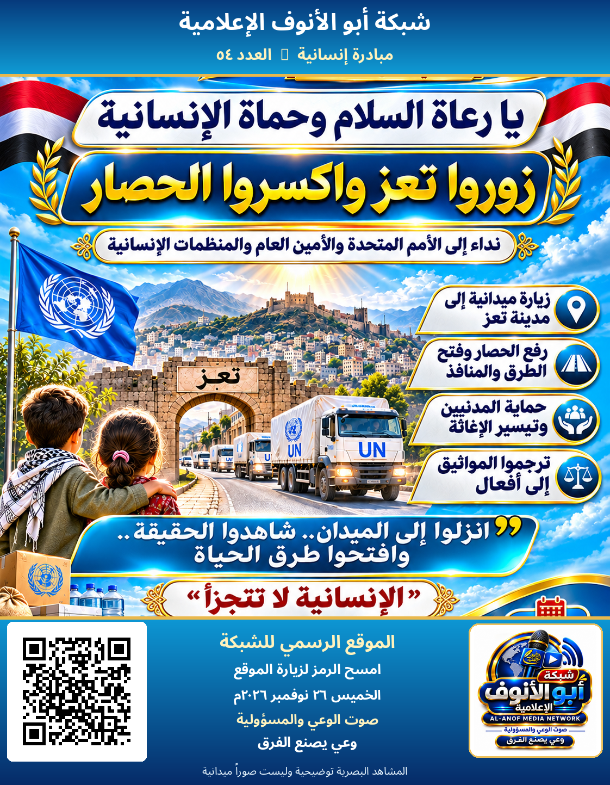

يا رعاة السلام وحماة الإنسانية.. زوروا تعز واكسروا الحصار

إلى الأمين العام للأمم المتحدة، وقيادات المنظمات والهيئات الأممية، ومجلس الأمن الدولي، ومفوضية حقوق الإنسان، والمنظمات الإنسانية والحقوقية، وأحرار العالم وأصحاب الضمائر الحية.
نخاطبكم اليوم بوصفكم رعاة السلام، وحماة الحقوق والحريات، وخدام الإنسانية، والمؤتمنين على المقاصد والمبادئ التي تأسست عليها منظمة الأمم المتحدة، وفي مقدمتها حفظ السلم والأمن الدوليين، وصون كرامة الإنسان، وحماية المدنيين، ومواجهة الظلم والانتهاكات.
إننا لا نطالبكم بمنحة أو امتياز، وإنما ندعوكم إلى الاضطلاع بمسؤولياتكم الإنسانية والأخلاقية والقانونية، وترجمة المواثيق والقرارات الدولية إلى واقع يلمسه الإنسان في مدينة تعز.
من أجل السلام الذي تحملون رسالته
كيف يمكن الحديث عن السلام والأمن بينما يعاني المدنيون من القيود المفروضة على تنقلهم ووصولهم إلى الغذاء والدواء والخدمات الأساسية؟
وكيف يمكن أن تتحقق العدالة الإنسانية إذا بقيت معاناة الضحايا حبيسة التقارير والبيانات والاجتماعات؟
إن السلام ليس مجرد غياب الحرب، بل هو حضور العدالة، وصون الكرامة، وحماية الحياة، وتمكين الإنسان من ممارسة حقوقه الأساسية دون خوف أو إكراه.
نزول ميداني يكشف الحقيقة
ندعوكم إلى زيارة مدينة تعز، والالتقاء بأبنائها، والاستماع مباشرة إلى شهادات المتضررين، وتفقد المستشفيات والمدارس والطرق والمنافذ، والوقوف على آثار الحصار والقيود المفروضة على المدينة.
وندعو إلى التنسيق مع الحكومة اليمنية والسلطة المحلية لتأمين وصول الوفود الدولية، ومطالبة جماعة الحوثيين بإزالة العوائق وفتح الطرق، والتحقق الميداني المستقل من مسؤولية كل طرف عن استمرار المعاناة.
إن الحقيقة تُكتشف في الميدان، وبين الضحايا والمتضررين، وليس بالاعتماد على روايات أطراف الصراع وحدها.
مسؤولية قانونية وليست مجرد مبادرة إنسانية
إن نداءنا يستند إلى جملة من المواثيق والقرارات الدولية، وفي مقدمتها:
- المادة الأولى من ميثاق الأمم المتحدة بشأن حفظ السلم والأمن الدوليين وتعزيز حقوق الإنسان.
- الإعلان العالمي لحقوق الإنسان، ولا سيما المواد ٣ و١٣ و٢٥ المتعلقة بالحياة والأمن وحرية التنقل والحقوق المعيشية والصحية.
- اتفاقيات جنيف والقانون الدولي الإنساني، بما يكفل حماية المدنيين وتيسير وصول الإغاثة الإنسانية.
- المادة ١٤ من البروتوكول الإضافي الثاني لاتفاقيات جنيف، التي تحظر تجويع المدنيين كأسلوب من أساليب القتال.
- قرار مجلس الأمن رقم ٢٢١٦ لسنة ٢٠١٥، الذي يدعو إلى حماية المدنيين وتسهيل وصول المساعدات الإنسانية في اليمن.
- قرار مجلس الأمن رقم ٢٤١٧ لسنة ٢٠١٨، المتعلق بمواجهة انعدام الأمن الغذائي الناجم عن النزاعات المسلحة وإدانة تجويع المدنيين.
إن هذه المرجعيات ليست نصوصاً للاحتفاء بها في المناسبات الدولية فحسب، بل هي التزامات ومبادئ ينبغي العمل على احترامها وإنفاذها.
تعز وغزة.. الإنسانية لا تتجزأ
وكما تحركت الضمائر الإنسانية والوفود والناشطون حول العالم تضامناً مع المدنيين في غزة، فإن تعز تستحق التضامن الإنساني ذاته، مع إدراك اختلاف الظروف والواقع الجغرافي لكل منهما.
فالدم الإنساني واحد، والكرامة الإنسانية واحدة، وحقوق الأطفال والنساء والمرضى لا تتغير بتغير الجغرافيا أو الهوية أو الانتماء.
مطالبنا إلى الأمم المتحدة والمجتمع الدولي
- تنظيم زيارة أممية رفيعة المستوى إلى مدينة تعز.
- العمل الجاد على رفع الحصار والقيود وفتح جميع الطرق والمنافذ بصورة آمنة ومستدامة.
- تسيير قوافل الإغاثة الإنسانية والطبية تحت إشراف دولي مستقل.
- إرسال بعثات لتقصي الحقائق وتوثيق الانتهاكات وتحديد المسؤوليات.
- دعوة الناشطين والحقوقيين والصحفيين الدوليين إلى زيارة تعز ونقل معاناة المدنيين إلى العالم.
- رفض ازدواجية المعايير، وعدم السماح بتحويل الحياد الإنساني إلى ذريعة للصمت عن الانتهاكات المثبتة.
- تفعيل الآليات الدولية المتاحة للمساءلة والمحاسبة وحماية المدنيين.
رسالة إلى الضمير العالمي
يا رعاة السلام، اصنعوا للسلام طريقاً إلى تعز.
يا حماة الحقوق، أعيدوا للمدنيين حقوقهم.
يا خدام الإنسانية، اقتربوا من الإنسان الذي تحملون رسالته.
إن أطفال تعز ونساءها ومرضاها ومعلميها وسائر أبنائها ينتظرون أفعالاً تترجم مبادئكم، ومواقف تجسد رسالتكم، وخطوات تعيد إليهم الأمل والحياة.
زوروا تعز.. شاهدوا الحقيقة.. ارفعوا الظلم.. وافتحوا طرق الحياة.
كونوا صوتاً لمن لا صوت له، وسنداً للمظلوم، وعوناً للإنسان، كما تقتضي رسالتكم ومبادئكم.
فالإنسانية لا تتجزأ، والعدالة لا تعرف ازدواجية المعايير، والسلام لا يكتمل دون رفع الظلم عن الإنسان.
#زوروا_تعز #اكسروا_حصار_تعز #تعز_تستغيث #الإنسانية_لا_تتجزأ